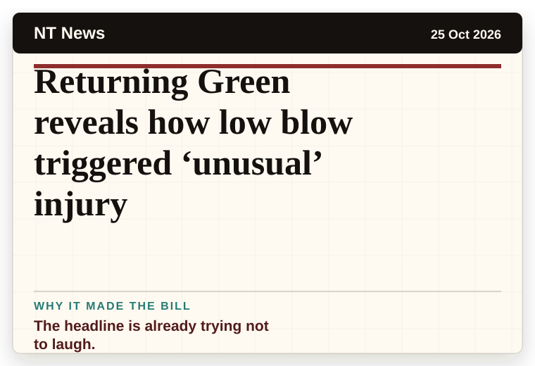
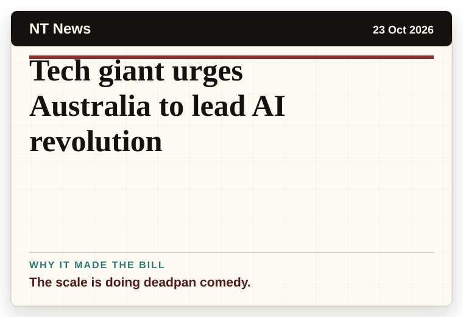
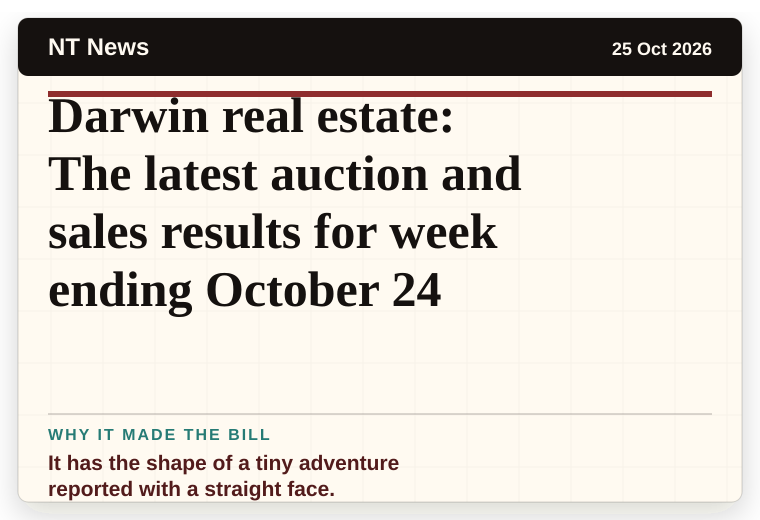
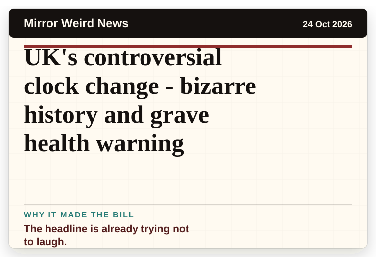
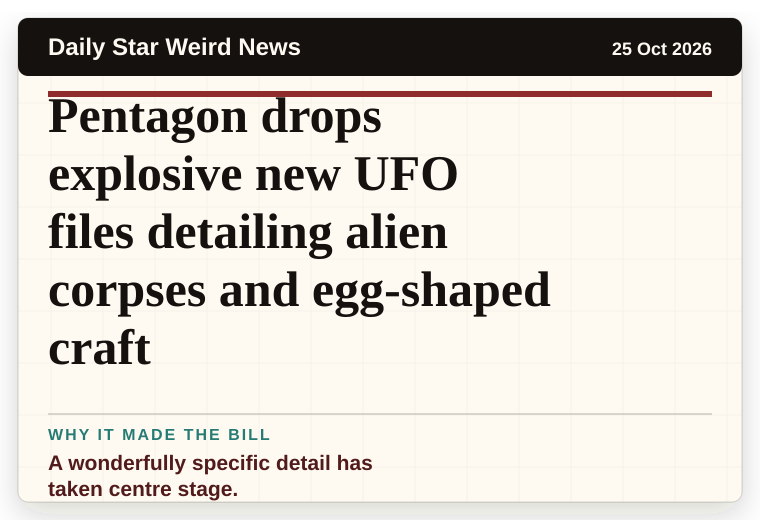
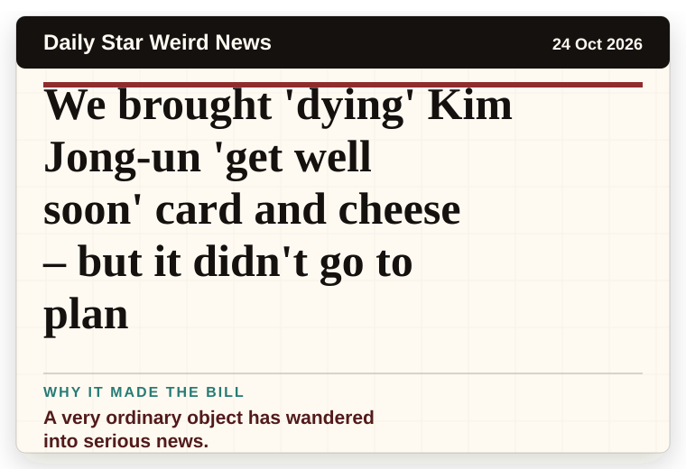
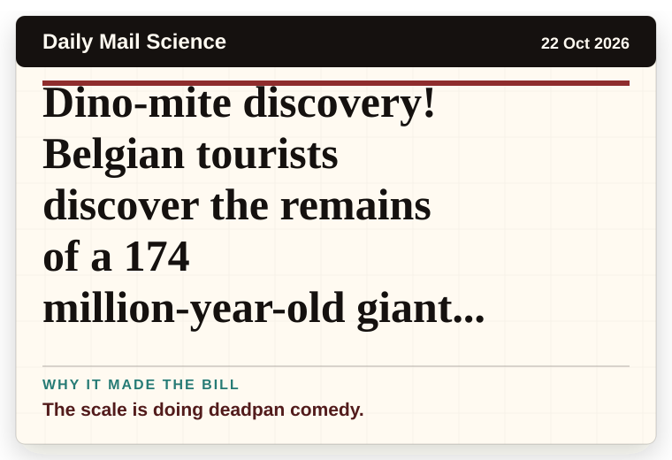
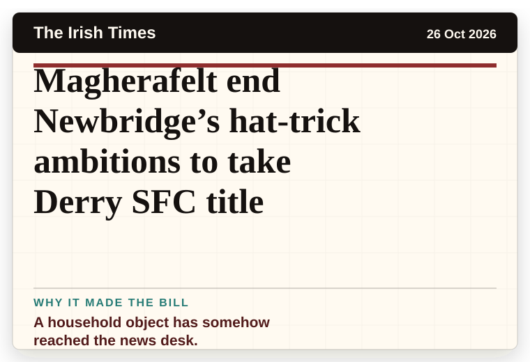

NT News
Australia
Returning Green reveals how low blow triggered ‘unusual’ injury
The headline is already trying not to laugh.
The latest daily picks, linked back to the original sources. Search the room, pick a source, or follow a headline out to the full story.
Record updated: 26 Oct 2026, 07:38 AM AEST
Showing 18 headline candidates from the refresh run completed on 26 Oct 2026, 07:38 AM AEST.

The headline is already trying not to laugh.

The scale is doing deadpan comedy.

It has the shape of a tiny adventure reported with a straight face.

It has the shape of a tiny adventure reported with a straight face.

A wonderfully specific detail has taken centre stage.

A wonderfully specific detail has taken centre stage.

The headline is already trying not to laugh.

A wonderfully specific detail has taken centre stage.

It has the shape of a tiny adventure reported with a straight face.

A very ordinary object has wandered into serious news.

A very ordinary object has wandered into serious news.

A wonderfully specific detail has taken centre stage.

A mystery is doing a lot of work in a very small sentence.

The word chaos gives it open-mic energy.

The scale is doing deadpan comedy.

The scale is doing deadpan comedy.

A household object has somehow reached the news desk.

A mystery is doing a lot of work in a very small sentence.